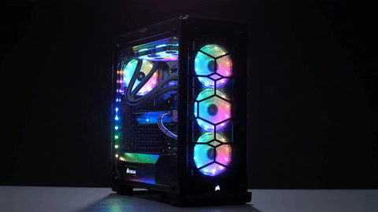

Computer
PC
Video Games
I got my first computer in roughly 2013 since then I have replced every part. I orderd my first one already built but I chose the parts but after that I have done it all my self.
My Current Parts
- i7-4790k
- R9 290
- GA-Z79X
- 32GB of Corsair RAM
- AIO Watercooled
- Corsair RM 850w
- Corsair C80
- Corsair K70 RGB
- Corsair Scimitar RGB
- 240GB Intel SSD
- 2TB HDD
- 4 Monitors
I use my computer pretty much every day that I have time. I mostly use it for video games but also to watch youtube and also learning constantly new things and how stuff works.
My most played video game is Battlefield 4. I used to play solely that ame and nothing else, I had Every gun and about 1,000 hours on Battlefield. I also played GTA V a lot not too long ago with roughly 800 hours and a net worth of over 500 million dollars. I have everything I want in that game with all fo the bunkers, hangars, offices, planes, cars, a flying motorcycle, and a yaght. Another game that I have a lot of time in is World of Tanks which I own 70 tanks and have played 12,000 battles. A game that I haven't played for very long but am getting better at is Counter-Strike: Global Offensive which is a very popular competitive game. Most of the games I play are FPS or sandbox style games.
